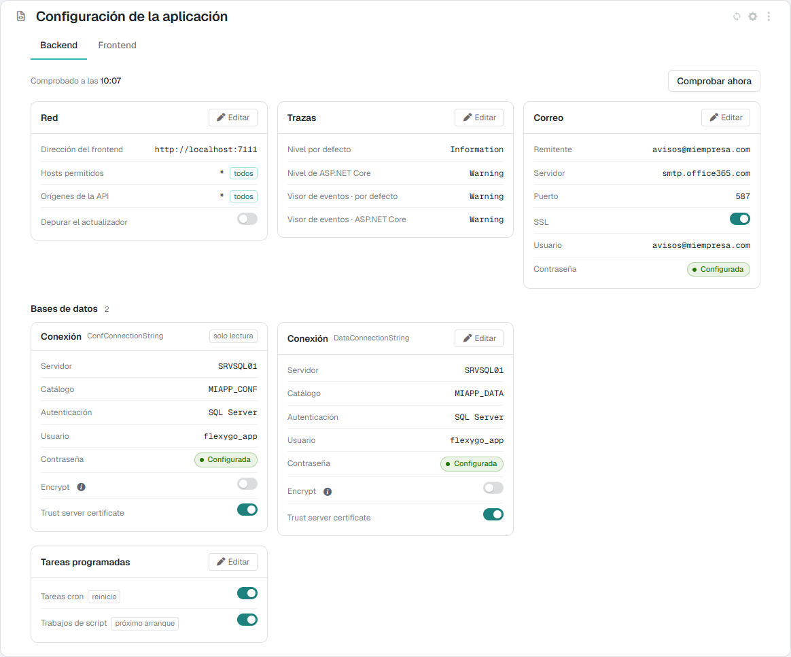
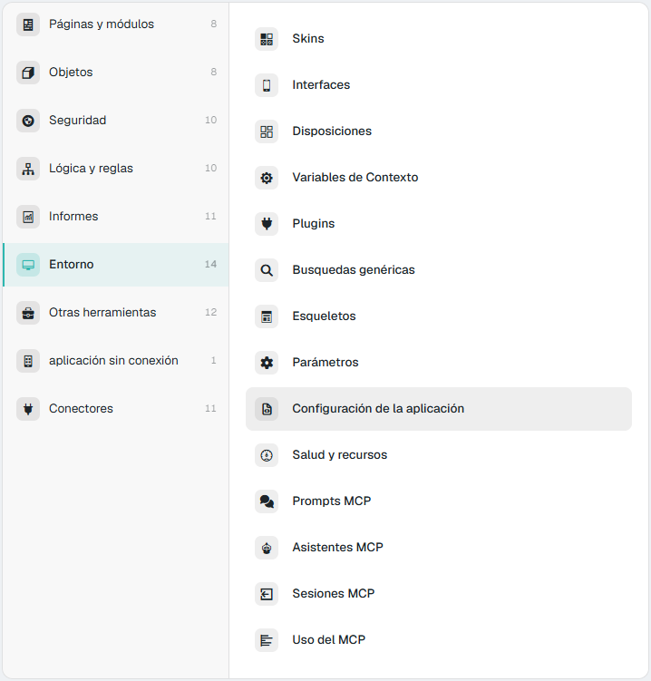
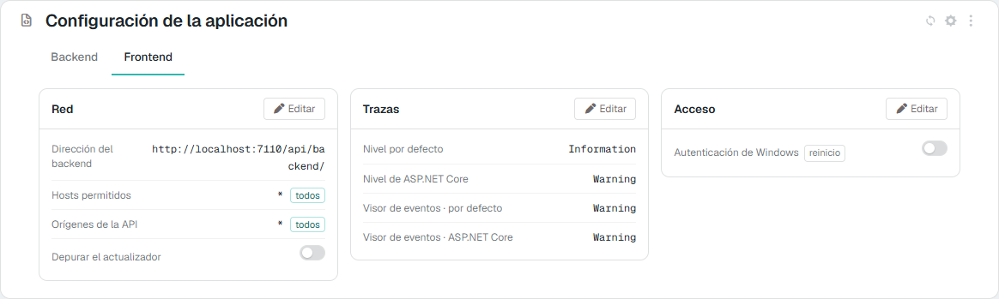
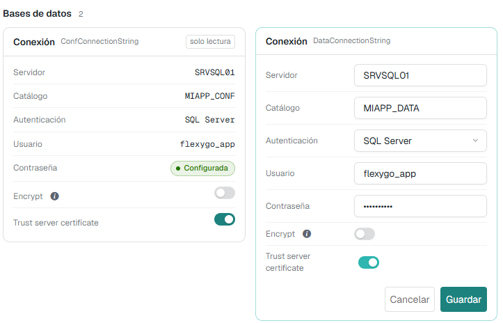
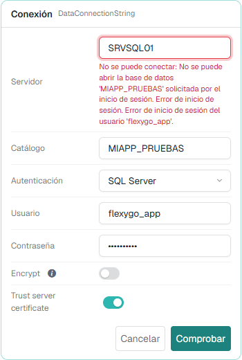
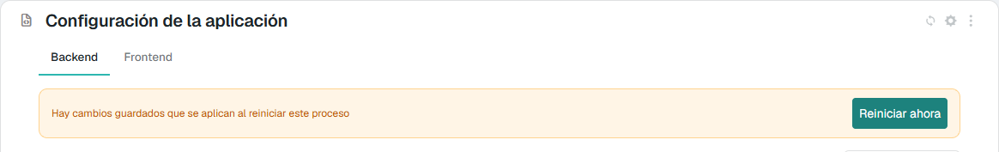
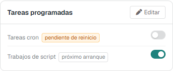

Configuración de la aplicación 10.0+¶
La pantalla Configuración de la aplicación enseña los ficheros appsettings.json del Backend y del Frontend y permite cambiarlos desde la propia aplicación, sin entrar en el servidor: las conexiones a las bases de datos, el correo, las trazas, las tareas programadas y la red.
No es un editor del fichero. Solo enseña las claves de una lista cerrada; las contraseñas no salen nunca del servidor, y la conexión a la base de configuración (ConfConnectionString) se puede ver, pero no cambiar. Antes de escribir nada, la aplicación comprueba que los valores nuevos funcionan: una conexión que no abre o una cuenta de correo que no entra no llegan al fichero.


1. Dónde está y quién la ve¶
- En el panel de control, área Entorno → Configuración de la aplicación. En la skin flexy2022: Admin Work Area > Environment > Application configuration.
- Desde la versión 10.1, también en el panel de la aplicación (Salud y recursos), pestaña Configuration. Es la misma pantalla.


Es una pantalla de administradores. El Backend y el Frontend solo responden a un usuario con rol de administrador; a cualquier otro le rechazan la petición, tanto para leer como para guardar.
2. Qué enseña¶
Tiene dos pestañas, Backend y Frontend, una por proceso. Cada una enseña su propio appsettings.json agrupado en tarjetas. Lo que tienen los dos procesos (la red y las trazas) sale primero y en el mismo sitio; después, lo propio de cada uno.
Backend
| Tarjeta | Campos | Clave del appsettings.json |
|---|---|---|
| Red | Dirección del frontend, Hosts permitidos, Orígenes de la API, Depurar el actualizador | FrontendEndpoint, AllowedHosts, WebApiOrigins, DebugUpdater |
| Trazas | Nivel por defecto, Nivel de ASP.NET Core, y los mismos dos para el Visor de eventos | Logging:LogLevel:Default, Logging:LogLevel:Microsoft.AspNetCore, Logging:EventLog:LogLevel:… |
| Correo | Remitente, Servidor, Puerto, SSL, Usuario, Contraseña | MailSettings:From, Host, Port, Ssl, UserName, Password |
| Bases de datos | Una tarjeta Conexión por cada conexión: Servidor, Catálogo, Autenticación, Usuario, Contraseña, Encrypt y Trust server certificate | ConnectionStrings:<id> |
| Tareas programadas | Tareas cron, Trabajos de script | DisableCronJobs, DisableScriptJobs |
Frontend
| Tarjeta | Campos | Clave del appsettings.json |
|---|---|---|
| Red | Dirección del backend, Hosts permitidos, Orígenes de la API, Depurar el actualizador | BackendEndpoint, AllowedHosts, WebApiOrigins, DebugUpdater |
| Trazas | Los mismos cuatro niveles que en el Backend | Logging:… |
| Acceso | Autenticación de Windows | EnableWindowsAuth |


Algunos detalles de cómo se leen los valores:
- Las conexiones son la de configuración y cada conexión de datos activa de la tabla de conexiones (
DbConnectionStrings). Una tercera conexión es una tarjeta más dentro de Bases de datos. La cadena de conexión se enseña desmontada en sus partes. - Las contraseñas no se enseñan nunca: solo si están Configurada o Sin configurar. El valor no llega al navegador ni siquiera al editar.
- Tareas cron y Trabajos de script se enseñan al derecho: el fichero guarda
DisableCronJobsyDisableScriptJobs, y la pantalla dice si las tareas se ejecutan. El interruptor encendido significa que las tareas están en marcha. - Un
*en Hosts permitidos u Orígenes de la API lleva la marca todos: se acepta cualquiera. - El valor enseñado es el que usa el proceso, no solo el del fichero. Si una variable de entorno lo sustituye (lo normal en Docker), la pantalla enseña ese valor con la marca entorno.
Las marcas de cada fila¶
| Marca | Qué quiere decir |
|---|---|
| solo lectura | Se enseña, pero no se cambia desde aquí (la conexión ConfConnectionString) |
| reinicio | Cambiarla exige reiniciar el proceso para que tenga efecto (DisableCronJobs, EnableWindowsAuth) |
| pendiente de reinicio | Se ha guardado un valor nuevo, pero el proceso sigue con el que tenía al arrancar (sección 5) |
| próximo arranque | Solo decide qué hace el proceso la próxima vez que arranque (DisableScriptJobs): nunca queda pendiente |
| entorno | El valor viene de una variable de entorno, que manda sobre el fichero. No se puede cambiar desde aquí |
| falla | Se ha comprobado y no funciona. Al pasar el ratón por encima se ve el motivo y la hora de la comprobación |
3. Las comprobaciones¶
Al abrir la pestaña Backend, la aplicación prueba los valores que pueden estar mal sin que el proceso lo note:
- la dirección del frontend, con la misma llamada que hace el actualizador;
- cada conexión, abriéndola y ejecutando un
SELECT 1; - la cuenta de correo, si está configurada, iniciando sesión en el servidor SMTP sin enviar nada.
Cada prueba espera como mucho 3 segundos (10 la del correo, porque Office 365 responde despacio a propósito cuando la contraseña es incorrecta). Arriba sale Comprobado a las hh:mm y, si algo falla, X de N comprobaciones fallan; cada fila que falla lleva la marca falla con el motivo. Comprobar ahora repite todas las pruebas en ese momento.
La aplicación recuerda cada resultado junto con el valor que probó: un valor que no ha cambiado no se vuelve a probar, y uno que ha cambiado (desde esta pantalla, a mano en el fichero o con una variable de entorno) se prueba de nuevo él solo. La pestaña Frontend no tiene comprobaciones.
4. Cambiar un valor¶
- Pulsa Editar en la tarjeta. Se edita una tarjeta cada vez.
- Cambia los campos. Cada uno usa el control que le corresponde:
- un interruptor para los sí/no;
- una lista para los niveles de traza (
Trace,Debug,Information,Warning,Error,Critical,None), para que una errata no impida arrancar el proceso; - una lista para la Autenticación de una conexión: Windows (integrada) o SQL Server. Con Windows se ocultan el usuario y la contraseña, y al guardar se quitan de la cadena de conexión, porque la conexión entra con la identidad del propio proceso;
- un campo de contraseña que aparece relleno con puntos si ya hay una. Si no lo tocas, se mantiene la actual; si escribes otra, se sustituye.
- Pulsa Comprobar o Guardar:
- Si has cambiado algo que se puede probar (una conexión, el correo, la dirección del frontend o del backend), el botón es Comprobar. Si los valores funcionan, sale Los valores funcionan. Ya puedes guardarlos. y aparece Guardar.
- En cualquier otro caso el botón es directamente Guardar, que comprueba lo mismo antes de escribir.


Si un valor no sirve, el motivo sale debajo del campo y no se guarda nada. La pantalla avisa cuando:
- falta un valor obligatorio (una conexión necesita servidor y catálogo, y con SQL Server, usuario; el correo necesita servidor);
- una dirección no empieza por
http://ohttps://; - el puerto no está entre 1 y 65535, o el remitente no es una dirección de correo válida;
- una parte de la cadena de conexión contiene
;; - la conexión no abre, la cuenta de correo no entra o no hay respuesta en la dirección indicada. En estos casos el mensaje es el del propio servidor que lo rechaza (SQL Server, el servidor de correo…).


Qué hace al guardar¶
- El servidor vuelve a comprobarlo todo antes de escribir; no se fía de lo que haya comprobado la pantalla.
- Solo escribe si todos los valores nuevos funcionan. Antes deja una copia del fichero al lado, con la extensión
.bak. - Escribe en
conf/appsettings.<Entorno>.jsondel proceso si existe (por ejemplo,appsettings.Production.json) y, si no, enconf/appsettings.json. - Si el fichero tiene los secretos cifrados, las contraseñas nuevas se guardan cifradas. Ver Cifrado de los appsettings.
- Al guardar el correo se marca como configurado (
MailSettings:Configured), igual que en el asistente de configuración. - La dirección del backend se acepta con o sin la
/final y con o sinapi/backend/, como en el asistente. - El registro del proceso apunta quién cambió qué claves, nunca sus valores.
5. Cuándo se aplica un cambio¶
Casi todo se aplica al momento, sin reiniciar: las conexiones, el correo, los orígenes de la API, la dirección del frontend y la del backend, y los niveles de traza.
Solo dos claves necesitan reiniciar el proceso, porque se leen al arrancar: Tareas cron (DisableCronJobs, en el Backend) y Autenticación de Windows (EnableWindowsAuth, en el Frontend). Llevan la marca reinicio. Cuando se guarda un valor nuevo de alguna de ellas, la fila pasa a pendiente de reinicio y arriba aparece el aviso Hay cambios guardados que se aplican al reiniciar este proceso.




- Si la aplicación está alojada en IIS, el aviso trae el botón Reiniciar ahora. Tras confirmarlo, el proceso se reinicia, la pantalla indica que se está reiniciando y se recarga sola cuando el proceso vuelve a responder. Quien esté usando la aplicación esperará unos segundos.
- En Docker, como servicio o con Kestrel, el aviso dice que hay que reiniciarlo desde allí.
El aviso no se pierde al recargar la página: el proceso compara esas claves con las que tenía al arrancar.
Trabajos de script (DisableScriptJobs) es distinto: solo decide si los trabajos de script de base de datos se ejecutan en el próximo arranque, así que lleva la marca próximo arranque y nunca queda pendiente.
6. Lo que no se cambia desde aquí¶
- La conexión a la base de configuración (
ConfConnectionString). Cambiarla es cambiar la instalación, y un error dejaría sin acceso a la propia pantalla. Se cambia a mano en elappsettings.jsondel Backend. - Lo que viene de una variable de entorno. El fichero no tendría efecto, porque la variable manda. Hay que cambiar la variable (por ejemplo, en el
docker-composeo en la configuración del contenedor). - Las claves que no están en la lista, que ni se enseñan ni se pueden escribir:
Kestrel,ProjectName(con la base de datos en marcha manda la tabla de ajustes),DatabaseNuget,JwtSettings,DataProtectiony las opcionalesForwardedHeadersyHttpsRedirection. Se editan en el fichero; ver Referencia: appsettings.json.